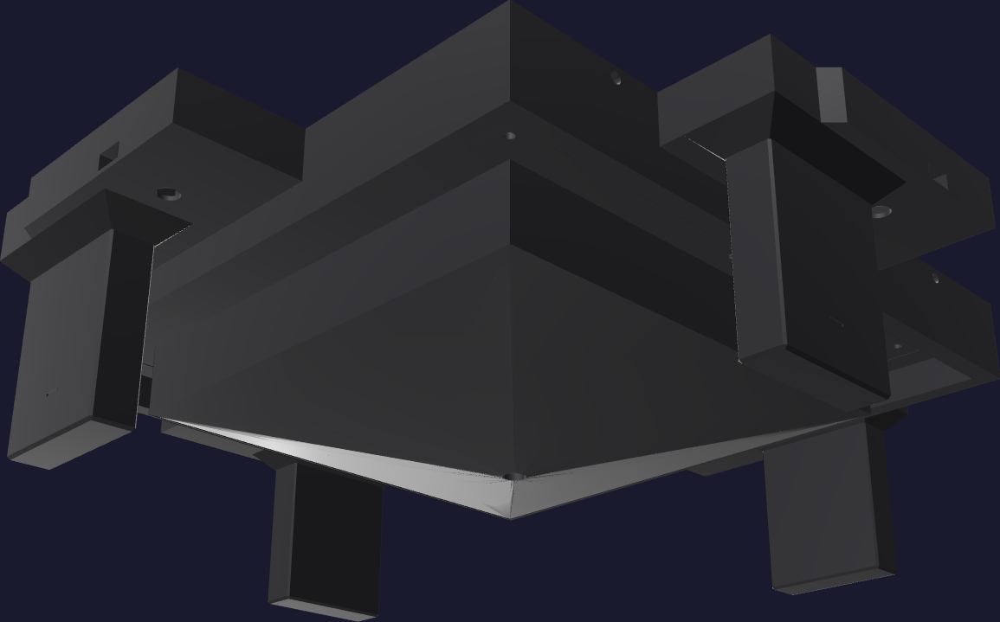

Print · plate 310
The core
The half that drops in. It prints upside down — open back on the bed, forming plug and guide blades pointing up. 31 h 08 m · 1,016 g · 424 layers.

Printing it inverted is what puts solid material where the load goes. The 8.4 mm roof each square nut lifts against is laid down first, straight onto the bed; the thin lip that retains the nut is the bridged feature, not the load path. The blind cap over the rod socket bridges the same way, into the open back where you can see it.
Where the bridging is
This plate carries almost all the bridging in the job: the nut-slot retaining lips and
the blind rod-socket cap. Both bridge away from the forming surface, so a sagged
underside is visible from the open back and does not touch the silicone.